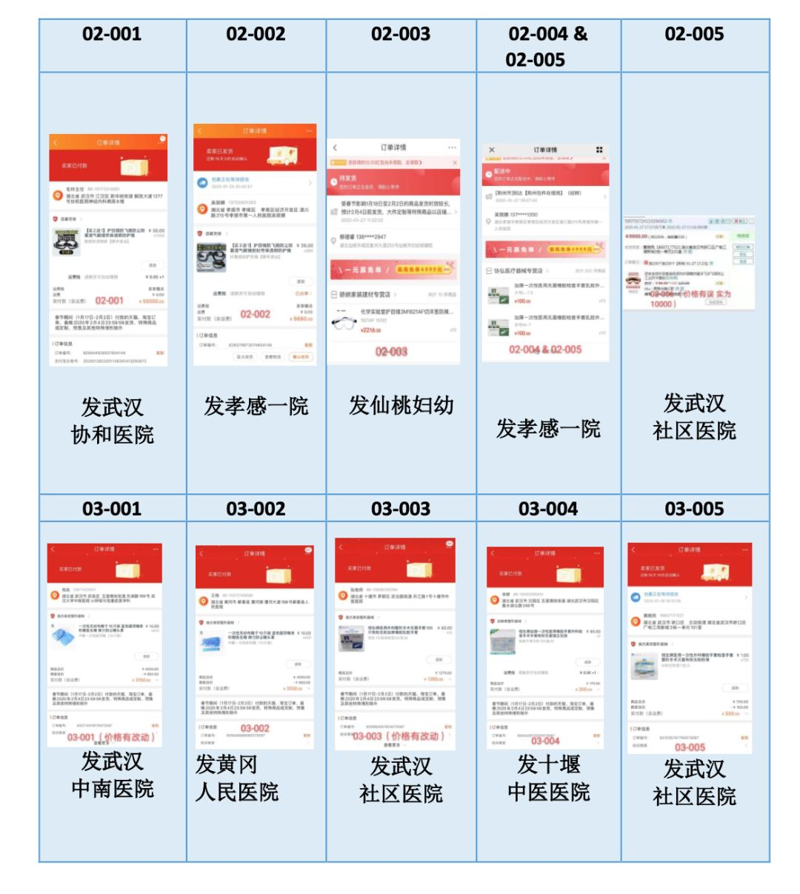

防疫物资之困丨单读征文
原文链接 备份链接 自新型肺炎疫情爆发以来，湖北乃至全国多个省份的医院因防疫物资短缺，向社会发出求助。而另一种声音却在说防疫物资是充足的，没有短缺。一时之间，防疫物资成为了薛定谔的猫。 今日来信的这位作者，便是自发为一线医院筹集防疫物资的 …
自从除夕夜做了筹款捐助医院的决定后，这就已经成为三个人生活的常态。
捐助发展得太快了。决定募资时，黄磊珂的目标只是4000块，刚好够买一箱楼下小卖部那样的N95口罩。他对物资标准之类的问题一无所知，唯一的判断是：“8块钱一个，还挺贵的，肯定符合标准。”
募资对象首先集中在以前打过交道的新加坡留学生。黄磊珂参与筹备过两届新加坡留学生的春晚，还参与过一个孵化学生社团的名为“Emergence涌基金”的NGO。所以，他最先发动的是参与过这两个项目的同学。
除夕夜晚上不到9点，黄磊珂在新加坡留学生的微信群里发布了二维码，宣布组建用于募资的“新加坡武汉留学生武汉捐款群”。“我们已经找到了一个口罩商家，一箱500个，4000RMB，希望大家一起捐款！如果没有货源了，就直接捐款！”扫码进群的人源源不断。
接二连三的危机很快出现。先是刚刚通过微信验证的口罩供货商已经没货了。黄磊珂第一次感受到压力。“你建群的时候就告诉大家找到了货源要买口罩，但现在又没货了。”在那之后，他在协调群里和其他组织者商议，是否按照约定，在找不到货源的情况下，直接捐钱。
“物资其实比钱有用。”协调小组有人提出异议。
“我觉得物资不仅难运，而且会有信息不对称。”另一名成员提出反对。
“物资买不到的。”黄磊珂有点儿沮丧。
温鞣旖刚刚进群，看到这三条关于物资的讨论，就把与一位前线医生的微信沟通截图发进协调小群：物资是最匮乏和最紧急的。
“But the question is what Wuhan needs，not what we can offer.” 多轮沟通后，在捐助方式上，大家终于达成一致：捐物资，口罩、护目镜和手套。
那个时候，用于筹划指挥的“坡党集资捐款协调中心”不到10个人。真正集中精力商讨出力的，只有四五个人。黄磊珂把“湖北之声”发布的“湖北紧急求援”消息发进群，作为物资的功能和防护标准参考。
找货源，大家只能分头想办法：黄磊珂通过亲友寻找口罩厂商，剩下的人分头去各大电商平台检索。筛选条件有三个：满足防护标准；春节发货；可以通过顺丰绿色通道运往武汉和周边地区。满足这条件的口罩货源寥寥无几。即便满足，供货商的资质和口罩的质量也难有保障。“这毕竟是发往一线的口罩，标准要非常高才行。”刘彦汝第一次感到“绝望”。
黄磊珂在大群如实相告。有群友提议从海外购置，被黄磊珂否决：“春节海关放假，再算上邮寄和清关时间。”有人坚持认为应该想办法找口罩。黄磊珂提醒：“所有物资都需要，不是只有口罩急需的。”又是几轮商讨，大家决定“主攻”货源相对充足的护目镜和手套。
温鞣旖记得那天晚上，每个人分头询问了大约80家店铺。有些店家“狮子大开口”，但也有店家听说是捐往武汉的物资，主动降价。最终，几个人在200多家店铺里筛选出不到10个货源。
质疑的声音在陌生捐赠者中间零星出现。货源怎么证明？你们的身份怎么证明？钱的流程怎么证明？
“我们什么都没有。如果你不相信我们，就不要捐了，我没办法向你证明。你可以观望一段时间，等我们完成第一批购买，如果你还有疑问，可以考虑退群。”黄磊珂选择用最简单的办法回应。
那天晚上，每个人都忙到凌晨两点半。黄磊珂记得他把一段编辑好的护目镜问询在京东上发了30几遍，没有店家回复。1月25日，大年初一，早上7点多，才有一家回复有货。他垫付5500元，买下200副发往武汉协和医院——那家店的全部存货——随后，他们把订单截图发进募资群，并给出捐助物资预算：1.5万元到2万元。
几乎在同一时间，第一个筹款群满员，有更多人要求入群。他们很快组建了第二个群。上午10：20，团队把收款码放进捐款群，宣布筹款正式开始。资金骤然涌入，刘彦汝的手机开始震个不停，从100元到2000元，各种金额都有，最常见的是200元到500元之间，捐赠者还会附上“武汉加油”一类的留言。
为了锁定货源，黄磊珂早就授权刘彦汝随时下订单。所以，上午10：57，刘彦汝下了第二笔订单，单价39.9元的医用手套，按照武汉市新冠肺炎防控指挥部针对捐赠方式发布的第4号通告“统一调配”的要求，发往武汉市红十字会。12：04，第三笔订单，单价26元的护目镜250个，发往武汉同济医院。12：09，第四笔订单，同样的护目镜，发往协和武汉红十字会医院（武汉协和医院分院）。12：24，第五笔，发往孝感市第一人民医院。13：58，第六笔，发往宜昌市第一人民医院。14：07，第七笔，发往仙桃市第一人民医院。15：04，第八笔，发往武汉市第一医院。

从正式发布到宣布结束，第一轮筹款和物资购买只用了不到7个小时。16：30，第一批物资购置、账目清算结束，黄磊珂在捐款大群里公告了明细：共计1.5万副手套、1450个护目镜。剩余款项是3410.31元，几个组织者又自掏腰包，凑到了5100。他们打算把这笔钱全数捐赠给武汉市慈善总会。
垫资下第一笔订单的时候，黄磊珂想过这笔钱“可能回不来”。但很快，他就意识到，筹款并不难。第一轮募资结束，他们收到53000元，远超预期。
真正难的，是找到符合防护标准的货源。一线医生提出的要求有时要高于官方标准。理论上相同的防护等级，一线医生更倾向于使用N95而不是KN95。刘彦汝则发现有很多“坑”都需要小心绕过。比如，需要很小心地核实实物究竟带不带呼吸阀，带呼吸阀的不能用于一线医护人员。有些商家会推荐9501和9502的3M口罩，但它其实主要防雾霾。护目镜要选防雾的，这样不会影响医护人员的临床操作。
在克服“绝望”的过程中，刘彦汝已经能够熟练背诵各种物资标准。接受采访时，她随时会背出一段一长串数字。“9132、1860、4565、1621AF，真的，这几天看到这些比看到啥都高兴，简直像中头奖了。”她在朋友圈里写道。
莱佛士初级学院毕业生刘彦汝
更难的是决定把物资给谁。温鞣旖对接医院，每一家医院都告诉她：“我们太缺了”。除了首先要考虑的协和、同济、人民医院三家，她只能考虑能直接对接到的医院。熟人社会开始起作用。有来自宜昌的留学生主动协调联络到了宜昌的医院，那宜昌就进入考虑范围。温鞣旖的妈妈是孝感人，能直接联系到孝感的医院，那它也可以列入名单。还有一些患者求助会提到无法入院是因为医院紧缺物资，这样的医院也可以立即联络。
总之，没有太多时间来考量分析，只能依靠有限的熟人推荐，综合考虑物流、地域平衡，用直觉迅速做决断。
温鞣旖一位初中同学的父母分别是协和和同济两家医院的医生。捐赠物资发出后，同学的父亲特意到班级的微信群了感谢了她。那条长微信里，他说了好多个“感谢”。温鞣旖看到以后就哭了，“我们这么一点小小的努力不值得他们这些在前线的医生这样感恩。医护人员现在有多辛苦，我都不敢想象。他们不应该承受这些。”
原文链接 备份链接 自新型肺炎疫情爆发以来，湖北乃至全国多个省份的医院因防疫物资短缺，向社会发出求助。而另一种声音却在说防疫物资是充足的，没有短缺。一时之间，防疫物资成为了薛定谔的猫。 今日来信的这位作者，便是自发为一线医院筹集防疫物资的 …
原文链接 备份链接 《战疫口述记》，是燃财经在新型冠状病毒肺炎期间推出的特别栏目，记录疫情亲历者的观察和感受。本文为第6篇，查看前5篇请点击《我和公司都快熬不住了》《节后返京，太太太南了》《我的“流浪”春节》《农村这样防肺炎》《我在武汉 …
原文链接 备份链接 目前，几个粉丝站的物资除了少量还在路上，大部分已经送到需要的人手里，然而尽管如此，全国各地的物资缺口仍然很大。 文 | 王超 高逸佳 薛雨霏 编辑 | 沈小山 “这些天大家也真的很拼了，晚上核对整理信息有时三四点才睡， …
原文链接 备份链接 什么拉长了社会捐赠物资从红十字会的仓库到疫情一线医务人员手中的最后短暂的路程？又是谁夺走了医生上战场的武器？ 记者 | 郭苏妍 叶雨晨 邓舒夏 王一越 编辑 | 张云亭 制图 | 程 星 2月1日，中国红十字总会工作 …
原文链接 备份链接 1月30日上午，载有救援物资的飞机抵达中国无锡。/ 采访对象供图 ***在这场抗击疫情的战役中，货车司机、在美华人华侨、中国互联网企业、广州导游团……他们放下家人，逆行赶往重灾疫区接力运送救援物资、在国内外四处筹集医疗 …